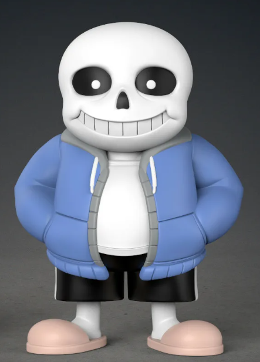

UNDERTALE SHOP UNDERTALE SHOP
UNDERTALE SHOP UNDERTALE SHOP Добро пожаловать в магазин Undertale shop.
Здесь вы можете купить качественный мерч по игре Undertale.
Не теряй решимости!

Фигурка всеми любимого персонажа "Санс", подходит для коллекционирования или подарка на День рождения!
Характеристики товара:
Один из главных героев игры это скелет "Санс", который всячески помогает игроку,и иногда просто издевается над ним. Высокое качество фигурки ""Санс"" не оставит равнодушными поклонников этой завораживающей игры!
Полирезин - это полимерный материал, который получается из смеси каменной крошки, смолы с добавлением красящих пигментов. Изделия из полирезина идеально подойдут тем, для кого важен креативный дизайн и безопасность. Данный материал имеет низкую теплопроводность, он устойчив к огню и влаге. Кроме того, он имеет насыщенный цвет.
В сочетании с ударопрочным ABS пластиком, эту фигурку тяжело испортить!
Данный товар отлично подойдет для создания игровой коллекции у вас дома! И является не менее прекрасным подарком на День рождения!
Поспешите, данного товара у нас на складе не СКЕЛЕтонна
Все права защищены